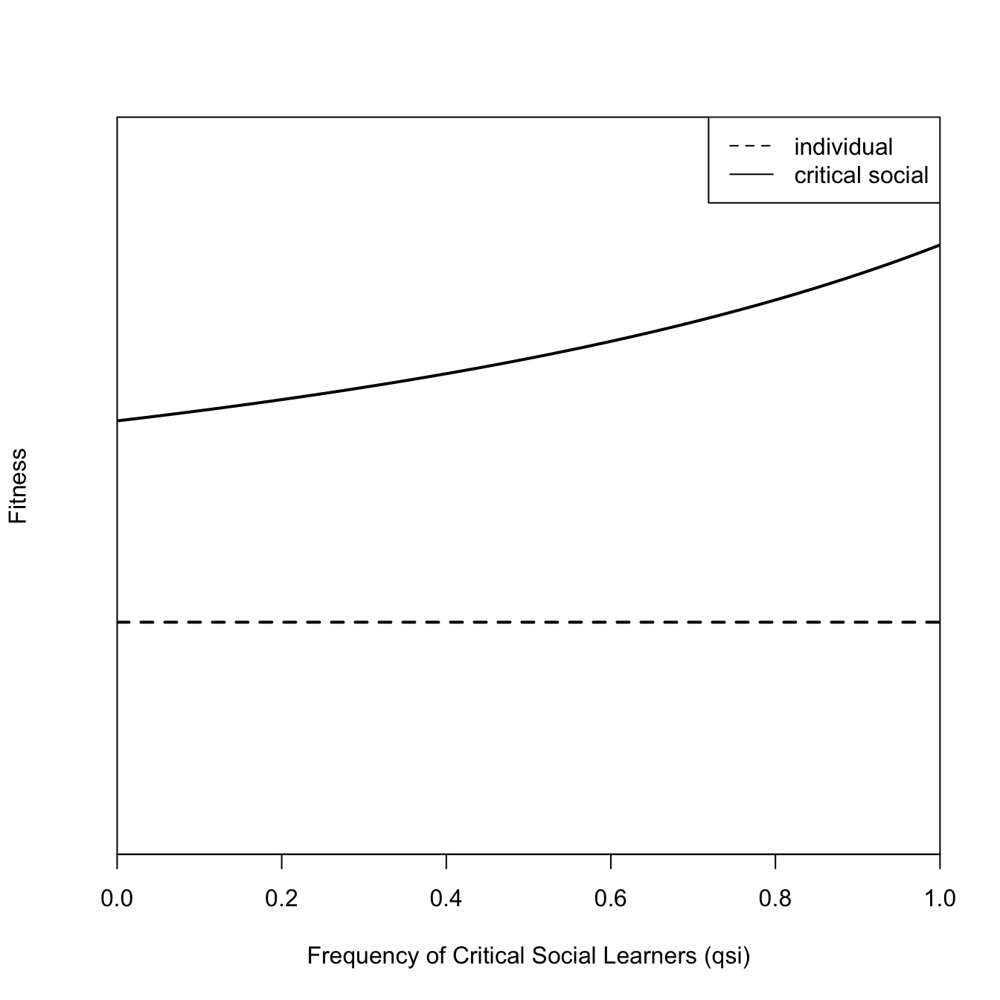

To illustrate the importance of culture for human adaptation, Joseph Henrich and McElreath (2003) discuss the Burke and Wills Expedition of 1860–61. The goal of the expedition was to cross the interior of Australia from South to North, starting in Melbourne and ending up in the Gulf of Carpentaria, 2,000 miles to the north. No European explorers had yet managed to live in this area or traverse this route, though it was settled by many thriving aboriginal groups.
They departed with all the pomp and arrogance of Victorian British explorers. Alas, things didn’t work out so well for them. Of the 19 men who left Melbourne, only one survived to return (and he was plagued with ill health for the rest of his short life; dying at age 33, 11 years subsequent to the ill-fated expedition).
Marsilea drummondii, or nardoo, is a species of fern. The sporocarps of this fern are processed by Aboriginal Australians into a type of flour that can be made into flour cakes (known as “damper” in Aus). If they are not properly processed, however, they are toxic, containing high concentrations of thiaminase, which destroys thiamine (vitamin B1). What results is a vitamin B1 deficiency, known as beriberi.
Wills’ last journal entry includes the following:
…starvation on nardoo is by no means very unpleasant, but for the weakness one feels, and the utter inability to move oneself, for as far as appetite is concerned, it gives me the greatest satisfaction. Certainly, fat and sugar would be more to one’s taste, in fact, those seem to me to be the great stand by for one in this extraordinary continent; not that I mean to depreciate the farinacious food, but the want of sugar and fat in all substances obtainable here is so great that they become almost valueless to us as articles of food, without the addition of something else…
Burke & Wills seem to have died of beriberi because they lacked the (cumulative) cultural knowledge of how to live in the Australian outback.
The Ratchet Effect:
Michael Tomasello defined the ratchet effect: “some individual or group of individuals first invented a primitive version of an artifact or practice, and then some later user or users made a modification, an ‘improvement,’ that others then adopted perhaps without change for many generations, at which point some other individual or group of individuals made another modification, which was then learned and used by others, and so on over historical time in what has sometimes been dubbed ‘the ratchet effect’” (Tomasello 1999: 5).
Joseph Henrich and McElreath (2003): “The mental representations that allow individuals to detoxify the fern spores…do not come coded in their genes, nor are these continually relearned by each individual via trial-and-error experimentation or deduced solely by fitness-oriented cost-benefit analysis. Instead, such adaptations result from and embody the cumulative effects of the efforts, experiments, errors, insight, and interactions of many individuals across generations.”
Our dependence on cumulative culture that no one person could begin to recreate in her lifetime is highlighted by the first episode of James Burke’s (1978) PBS series, Connections. Burke uses the blackouts in New York City as a launching point for a meditation on how the typical citizen of a rich country in the Global North would fair if civilization collapsed. “And what, in your comfortable urban life, has ever prepared you for that decision?” (26:20)
The transmission described by Tomasello, in his discussion of the ratchet effect, and the adaptiveness alluded to by both him and Henrich & McElreath suggest that culture dynamics might have analogous properties to biological evolution.
Genetic transmission and subsequent modification produces tree-like structures Showing a tree can be a powerful tool for inferring evolutionary process Tinbergen’s phylogenetic cause There are problems with culture though
Borgerhoff Mulder et al. note: “any trait can be fed into a software program to produce, or map, a phylogeny. This does not mean that the phylogeny is the most accurate depiction of the trait’s history, nor that vertical transmission best accounts for its distribution.”
“We strongly agree with the authors Mesoudi et al. (2006) that the potential for horizontal transmission of cultural traits does not invalidate an evolutionary approach to culture. We suggest, however, that it does require a different evolutionary treatment.”
Cultural Evolution Is Not Identical to Genetic Evolution
For example, individuals can have more than two “parents” because learning happens from non-parents as well. In particular, there is extensiveh horizontal transmission (peer-to-peer) as well as oblique transmission (non-parent older-to-younger). Cultural traits are acquired by copying phenotype, rather than inheriting a genotype, though both may involve ontogenetic processes. Mutation can be nonrandom. Mutation more likely to be “directed” in times of uncertainty. Transmission and change happens within a lifetime.
Cultural evolution can be Lammarckian: Evolution by acquired characteristics.
4.1 Is Culture Adaptive?
Adaptations are characteristics that make organisms better suited for the environments Unfortunately, some writers suggest that natural selection produces adaptation by definition not true!
In his pioneering paper on the adaptive value of culture, Rogers (1988) writes, “When selection does not maximize mean fitness, there is no reason to think that it will produce adaptation. Thus, the capacity for culture is expected to be adaptive only if the mean fitness of a population with culture is higher than that of one without.”
Rogers looks at two different extremes. The first is the Weak Constraint Model, in which biological constraints on culture are too weak to be significant, therefore, models of genetic evolution will be of little use in understanding variation in human behavior. The second is the Acultural Model: If culturally acquired-behaviors tended to reduce Darwinian fitness, then the capacity for culture would be altered or destroyed by natural selection and behavior should tend to enhance fitness whether transmission is cultural or not.
Mean fitness does not, in fact, increase at the equilibrium. While it increases for low-frequencies of social learning, it comes right back to baseline for the equilibrium. Note that this equilibrium is stable since to the left of it, social learners have higher fitness, whereas to the right of it, individual learners have higher fitness.
Correlation decreases as the cost of individual learning increases or as the frequency of environmental perturbation and cost of social learning decrease.
Note that this is really just a ratio between the efficiency of individual learning to the efficiency of social learning.
“The model’s main result is equation 4, which relates the correlation between behavior and the environment to the efficiencies of individual and social learning. As these undoubtedly vary from behavior to behavior, it follows that some behaviors should track the environment well, others poorly. Consequently, ecology should be more useful in understanding some behaviors than others, a fact that cultural ecologists have long understood (Oliver 1962:Steward 1955). This equation also implies that acultural evolutionary models are unlikely to be helpful in understanding behaviors that are usually learned socially.” (pp. 827-28)
\[
r=\frac{1-c}{(1-u)(1-s)}
\]
Increasing the cost of individual learning (\(c\)) reduces the correlation between the environment and the behavior.
Increasing the frequency of environmental perturbation or the cost of social learning increases the correlation between the environment and behavior.
changing \(u\) or \(s\) has the same effect (assuming the other is held constant) since they are involved in a product in the denominator.
“The weak form of the argument from natural origins assumes that mechanisms of cultural transmission can evolve only if the behaviors produced tend to be consistent with the predictions of acultural evolutionary models.” consistency between behavior and acultural models measured by correlation \(r\).
Some tendency for behavior to accord with acultural models
“However, if the efficiency of social learning is high, then \(r=0\), and this tendency will be negligible. There is therefore no basis for the claim that, if the capacity for culture evolved by natural selection, then culture must be explicable in terms of ordinary, acultural evolutionary models.” (pp. 826-27)
Frequency dependence of handedness in humans. Fighting Hypothesis: Left-Handers have a small advantage in fighting, but only when they are relatively rare (Raymond et al. 1996).
Recent evidence suggests left-handers are over-represented in combat sports and win more often than expected by chance (Richardson and Gilman 2019).
Enquist, Eriksson, and Ghirlanda (2007) introduce Critical Social Learning: a strategy that tries to solve an adaptive problem first by social learning, and then by individual learning if socially acquired behavior proves unsatisfactory
Unlike Rogers’ model, mean fitness increases as the frequency of critical social learners increases. Culture is adaptive!
## Enquvist et al. (2007)eeq2 <-function(piok=0.5,ci=0.2) piok - cieeq7 <-function(qsi,psokok=0.9,cs=0.02,piok=0.5,ci=0.2){ qok <- piok/(1-psokok*(1-piok)*qsi) wsi <- qok*psokok - cs + (1-qok*psokok)*(piok-ci)return(wsi)}plot(p,eeq7(qsi=p), type="l", lwd=2, axes=FALSE, frame=TRUE,xaxs="i",ylim=c(0,1),xlab="Frequency of Critical Social Learners (qsi)", ylab="Fitness")abline(h=eeq2(),lty=2,lwd=2)axis(1)legend("topright", c("individual","critical social"), lty=c(2,1))

The critical social learner first tries social learning, and if the result is unsatisfactory, they then try individual learning.
Spatial Structure Overcomes Rogers’ Paradox Rendell, Fogarty, and Laland (2010). the fitness of social learners is highest in the zones of contact with asocial learners. Essentially, they get costless information from the asocial learners on these borders.
4.2 Diffusion of Innovations
## Ryan & Gross (1943) Adoption of hybrid corn## measured from their figure 2 using a lucite ruler!corn <-c(0.5, 1.5, 2, 2, 2.5, 1.5, 3.5, 6.5, 8.5, 14, 24, 18.5, 14, 5.5, 1.5)yrs <-1927:1941barplot(corn,names.arg=yrs, axis.lty =1, xlab="Year", ylab="Precentage Adopting", ylim=c(0,25))
The cumulative adoption curve is S-shaped. Nonlinear least-squares fit to the observed data (note that the prediction for year > 1939 is >100% adoption!).
Innovators, Early Adopters, Early Majority, Late Majority, Laggards
4.3 Modes of Cultural Transmission
Unbiased Transmission Unbiased Transmission with Mutation Random Mutation Biased Mutation Biased Transmission Direct Bias: Bias depends on properties of the trait Indirect Bias: Bias depends on properties of the model
Rapid Diffusion of Steel Axes Among the Yir-Yoront
missionaries on the Cape Yorke Peninsula freely gave out steel axes, hoping to improve productivity and, naturally, civilize this hold-out group. The social consequences were devastating as Yir-Yoront society was largely structured around the production and control of stone axes.
You’re in a new city and you want to go out and get dinner. How do you choose a restaurant?
4.3.1 Conformist Bias
A Particularly Important Form of Indirect Bias
When in doubt, do what the majority of people around you are doing Boyd & Richerson (1985) show valuable strategy in a spatially-variable environment with dispersal If the most frequent local variant also happens to be most adaptive, “individuals who have a tendency to acquire the most common variant would also have an improved chance of acquiring the locally favored variant” (p. 220) Liken conformist bias to robust estimators in statistics
Conformity means something particular: specifically, it means that you choose a behavior more frequently than its frequency in the population. So, if 40% of people are doing something, you exhibit a conformist bias if you are more than 40% likely to copy that behavior.
It does not mean you have to go with the majority, though it often amounts to that.
likening to robust estimators suggests variance-bias trade-off.
J. Henrich and Boyd (1998) argue for broad superiority Note that it’s a mechanism for generating cultural differences McElreath et al. (2005) find that participants in experiments are more likely to follow a linear rule than conformity
4.4 Culture Can Be Remarkably Persistent
Sonya Salamon studied farming communities in Illinois settled in mid 1800’s by immigrants from different regions: Germans (2 communities, Westfalian Catholics, Friesian Protestants) Yankees (2 communities, mainly from Ohio and mid-Atlantic states) (Salamon 1985). She suggested that these groups differed in systematic ways. For Yankee “Entrepreneurs,” farming was a business, the goal of which was to make money. They placed a high value on education and didn’t pressure children to go into farming. There was considerable intergenerational competition and son’s were responsible for their own livelihoods.
In contrast, for “German Yeomen” farming was a valuable way of life. The goal was to keep the farm in the family. They did not place a high value on education and urged children to go into farming. Parents were responsible for setting up their son/heir financially and there was generally a spirit of intergenerational cooperation.
Salamon found that these cultural differences persisted for the approximately 100 years between when the region was settled and her study. The descendants of the German colonists rented less land and maintained smaller farms than the descendants of Yankees. Yankee farmers grew commodities for sale, whereas German farmers pursued livestock for subsistence (not an ideal place for commercial dairying or livestock-rearing).
Wicked John and the Devil is an Appalachian folk tale. Wicked John is mean to everyone but, for some reason, not to strangers. A stranger comes to his remote blacksmith shop one day and Wicked John feeds him. The stranger transmutes into St. Peter, who grants Wicked John three wishes for his kindness. Wicked John, being a grumpy man who is always trying to protect his property from his neighbors, basically asks for magic that can trap people until he lets them go (in a hammer, a rocking chair, and a thorn bush). Fast forward, he tricks the devil into getting trapped by the thorn bush and avoids getting brought down to hell.
There is an alternative version in African American folklore which, frankly, makes a bit more sense than this “canonical” version (Zora Neale Hurston).
This story turns out to be potentially 6000 years old! The tale known as “The Smith and the Devil” and was told by the people who spoke Proto-Indo-European (Silva and Tehrani 2016). Other, more famous, fairy tales like Rumpelstiltskin and Cinderella might be nearly as old. Neil Gaiman talks about the idea that the tales are using us to reproduce.
Enquist, Magnus, Kimmo Eriksson, and Stefano Ghirlanda. 2007. “Critical Social Learning: A Solution to Rogers’s Paradox of Nonadaptive Culture.”American Anthropologist 109 (4): 727–34. http://www.jstor.org/stable/27563823.
Henrich, J., and R. Boyd. 1998. “The Evolution of Conformist Transmission and the Emergence of Between-Group Differences.”Evolution and Human Behavior 19 (4): 215–41. https://doi.org/10.1016/S1090-5138(98)00018-X.
Henrich, Joseph, and Richard McElreath. 2003. “The Evolution of Cultural Evolution.”Evolutionary Anthropology 12 (3): 123–35. https://doi.org/10.1002/evan.10110.
McElreath, Richard, Mark Lubell, Peter J. Richerson, Timothy M. Waring, William Baum, Edward Edsten, Charles Efferson, and Brian Paciotti. 2005. “Applying Evolutionary Models to the Laboratory Study of Social Learning.”Evolution and Human Behavior 26 (6): 483–508. https://doi.org/10.1016/j.evolhumbehav.2005.04.003.
Raymond, Michel, Dominique Pontier, Anne-bééatrice Dufour, and Anders Pape Møller. 1996. “Frequency-Dependent Maintenance of Left Handedness in Humans.”Proceedings of the Royal Society of London. Series B: Biological Sciences 263 (1377): 1627–33. https://doi.org/10.1098/rspb.1996.0238.
Rendell, Luke, Laurel Fogarty, and Kevin N. Laland. 2010. “Rogers’ Paradox Recast and Resolved: Population Structure and the Evolution of Social Learning Strategies.”Evolution 64 (2): 534–48. https://doi.org/10.1111/j.1558-5646.2009.00817.x.
Richardson, Thomas, and R. Tucker Gilman. 2019. “Left-Handedness Is Associated with Greater Fighting Success in Humans.”Scientific Reports 9 (1): 15402. https://doi.org/10.1038/s41598-019-51975-3.
Salamon, Sonya. 1985. “Ethnic Communities and the Structure of Agriculture.”Rural Sociology 50 (3): 323.
Silva, Sara Graça da, and Jamshid J. Tehrani. 2016. “Comparative Phylogenetic Analyses Uncover the Ancient Roots of Indo-European Folktales.”Royal Society Open Science 3 (1): 150645. https://doi.org/10.1098/rsos.150645.
Tomasello, Michael. 1999. The Cultural Origins of Human Cognition. Cambridge, MA: Harvard University Press.